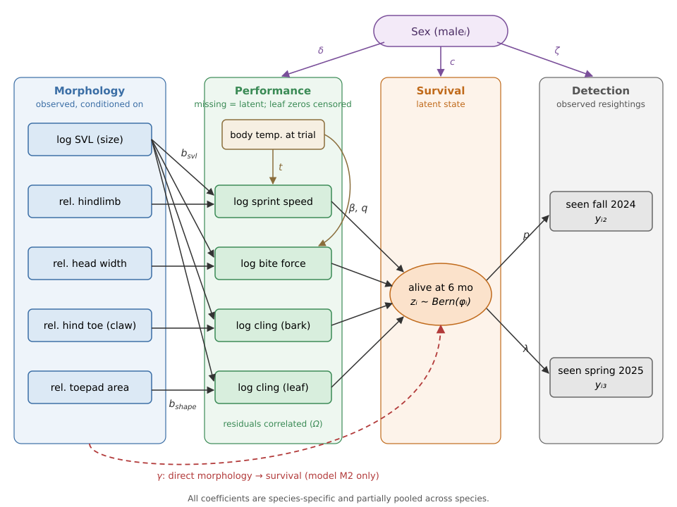

Show code
library(tidyverse)
lizards <- read_csv("data/lizards-spring-2024.csv", show_col_types = FALSE)
n_missing_morph <- sum(lizards$exclusion == "missing morphology", na.rm = TRUE)Causal structure, full specification, priors and Stan code
library(tidyverse)
lizards <- read_csv("data/lizards-spring-2024.csv", show_col_types = FALSE)
n_missing_morph <- sum(lizards$exclusion == "missing morphology", na.rm = TRUE)The model estimates both links of the paradigm jointly, morphology → performance and performance → survival, while correcting survival for imperfect detection. The choices behind the data inputs are explained on the Data page. A PDF version of this page is also available.

All continuous variables except body temperature are log-transformed. All, including temperature, are then standardised within species, using that species’ observed sample mean and SD: \[
\operatorname{std}_s(v) = \frac{v - \bar{v}_s}{\operatorname{sd}_s(v)}.
\] Coefficients are then in within-species SD units, and so comparable among species and traits. Survival coefficients become standardised selection gradients (on the logit scale), and one set of generic priors can be used. The constants \(\bar v_s\) and \(\operatorname{sd}_s(v)\) are fixed data, so the simulator used for calibration applies the identical transformation (prepare_data() in R/prepare-data.R).
| Symbol | Meaning |
|---|---|
| \(i = 1, \dots, N\) | individual |
| \(s = s[i] \in \{\text{caro}, \text{cris}, \text{sag}\}\) | species of individual \(i\) |
| \(j \in \{\text{spr}, \text{bite}, \text{bark}, \text{leaf}\}\) | performance trait |
| \(k \in \{\text{svl}, \text{hl}, \text{hw}, \text{toe}, \text{pad}\}\) | morphological predictor |
| \(k(j)\) | shape trait linked to \(j\): \(k(\text{spr}) = \text{hl}\), \(k(\text{bite}) = \text{hw}\), \(k(\text{bark}) = \text{toe}\), \(k(\text{leaf}) = \text{pad}\) |
| \(m_i \in \{0, 1\}\) | male indicator (female = 0) |
| \(x_{ik}\) | standardised morphological predictor (data) |
| \(w_{ij}\) | standardised body temperature at the trial for \(j\) (data; 0 for bark and leaf) |
| \(u_{ij}\) | standardised log performance (data, or latent if missing) |
| \(z_i \in \{0, 1\}\) | alive at the fall 2024 census (latent) |
| \(y_{i2}, y_{i3} \in \{0, 1\}\) | seen in fall 2024 / spring 2025 |
Each lizard’s vector of the four performance traits is multivariate normal: \[ \mathbf{u}_i \sim \operatorname{MVN}\left(\boldsymbol{\mu}_i, \boldsymbol{\Sigma}_{s[i]}\right), \qquad \boldsymbol{\Sigma}_s = \operatorname{diag}(\boldsymbol{\sigma}_s)\, \boldsymbol{\Omega}\, \operatorname{diag}(\boldsymbol{\sigma}_s), \] with a mean that depends on size, the linked shape trait, sex and body temperature: \[ \mu_{ij} = \alpha_{sj} + \delta_{sj}\, m_i + b^{\text{svl}}_{sj}\, x_{i,\text{svl}} + b^{\text{shape}}_{sj}\, x_{i,k(j)} + t_{sj}\, w_{ij}. \]
The probability of surviving the first six months depends on temperature-adjusted performance: \[ z_i \sim \operatorname{Bernoulli}(\phi_i), \] \[ \operatorname{logit}(\phi_i) = a_s + c_s\, m_i + \sum_j \beta_{sj}\, \tilde u_{ij} + \sum_j q_{sj}\, \tilde u_{ij}^2 \;\left[\, + \sum_k \gamma_{sk}\, x_{ik} \,\right]_{\text{M2 only}}. \]
Resighting depends on whether the lizard is alive: \[ y_{i2} \sim \operatorname{Bernoulli}(z_i\, p_i), \qquad \operatorname{logit}(p_i) = \pi_s + \zeta_p\, m_i, \] \[ y_{i3} \sim \operatorname{Bernoulli}(z_i\, \lambda_i), \qquad \operatorname{logit}(\lambda_i) = \ell_s + \zeta_\lambda\, m_i. \]
This is a Cormack–Jolly–Seber model for three occasions. Summing over the latent \(z_i\) gives the likelihood of each history:
| History \((y_{i2}, y_{i3})\) | Probability |
|---|---|
| 1 1 | \(\phi_i\, p_i\, \lambda_i\) |
| 0 1 | \(\phi_i\, (1 - p_i)\, \lambda_i\) |
| 1 0 | \(\phi_i\, p_i\, (1 - \lambda_i)\) |
| 0 0 | \((1 - \phi_i) + \phi_i\, (1 - p_i)(1 - \lambda_i)\) |
Lizards seen in spring 2025 but missed in fall (history 01) identify \(p\). Selection on 6-month survival (\(\phi\)) is then estimated free of detection bias. This assumes detection does not depend on performance or morphology beyond sex.
For morphological predictor \(k\) in species \(s\), evaluated at the species mean, where \(\tilde u = 0\) so the quadratic terms vanish: \[ \text{indirect}_{sk} = \sum_{j} b_{sjk}\, \beta_{sj}, \qquad \text{direct}_{sk} = \gamma_{sk}, \qquad \text{total}_{sk} = \text{indirect}_{sk} + \text{direct}_{sk}. \] Here \(b_{sjk}\) is \(b^{\text{svl}}_{sj}\) for \(k = \text{svl}\), \(b^{\text{shape}}_{sj}\) when \(k = k(j)\), and 0 otherwise. Size is the only predictor with indirect paths through all four performance traits. Support for full mediation is assessed in three ways: from the posteriors of \(\gamma_{sk}\), by comparing M1 and M2 with PSIS-LOO, and by checking in simulation (Validation) whether the design can detect \(\gamma \neq 0\).
Every parameter labelled hierarchical below varies by species and is partially pooled: \[ \theta_s = \mu_\theta + \tau_\theta\, \tilde\theta_s, \qquad \tilde\theta_s \sim \mathcal{N}(0, 1), \] with separate \(\mu_\theta\) and \(\tau_\theta\) for each performance trait \(j\) or predictor \(k\). This is the non-centered form used in Stan. With only three species, \(\tau_\theta\) is weakly identified, so its priors are deliberately informative.
All scales are standardised traits or logits. \(\mathcal{N}^+\) is the half-normal distribution.
| Parameter | Pooling | Prior |
|---|---|---|
| Performance | ||
| \(\alpha_{sj}\) | none | \(\mathcal{N}(0, 0.5)\) |
| \(\delta_{sj}\) | hierarchical | \(\mu \sim \mathcal{N}(0, 1)\), \(\tau \sim \mathcal{N}^+(0, 0.5)\) |
| \(b^{\text{svl}}_{sj}\) | hierarchical | \(\mu \sim \mathcal{N}(0, 0.5)\), \(\tau \sim \mathcal{N}^+(0, 0.25)\) |
| \(b^{\text{shape}}_{sj}\) | hierarchical | \(\mu \sim \mathcal{N}(0, 0.5)\), \(\tau \sim \mathcal{N}^+(0, 0.25)\) |
| \(t_{sj}\) (sprint, bite) | hierarchical | \(\mu \sim \mathcal{N}(0, 0.5)\), \(\tau \sim \mathcal{N}^+(0, 0.25)\) |
| \(\sigma_{sj}\) | none | \(\mathcal{N}^+(0, 1)\) |
| \(\boldsymbol{\Omega}\) | shared | \(\operatorname{LKJ}(2)\) |
| Survival | ||
| \(a_s\) | hierarchical | \(\mu \sim \mathcal{N}(-1, 1)\), \(\tau \sim \mathcal{N}^+(0, 0.5)\) |
| \(c_s\) | hierarchical | \(\mu \sim \mathcal{N}(0, 1)\), \(\tau \sim \mathcal{N}^+(0, 0.5)\) |
| \(\beta_{sj}\) | hierarchical | \(\mu \sim \mathcal{N}(0, 0.5)\), \(\tau \sim \mathcal{N}^+(0, 0.25)\) |
| \(q_{sj}\) | hierarchical | \(\mu \sim \mathcal{N}(0, 0.25)\), \(\tau \sim \mathcal{N}^+(0, 0.1)\) |
| \(\gamma_{sk}\) (M2) | hierarchical | \(\mu \sim \mathcal{N}(0, 0.5)\), \(\tau \sim \mathcal{N}^+(0, 0.25)\) |
| Detection | ||
| \(\pi_s\) | hierarchical | \(\mu \sim \mathcal{N}(0, 1.5)\), \(\tau \sim \mathcal{N}^+(0, 1)\) |
| \(\ell_s\) | hierarchical | \(\mu \sim \mathcal{N}(0, 1.5)\), \(\tau \sim \mathcal{N}^+(0, 1)\) |
| \(\zeta_p\), \(\zeta_\lambda\) | shared | \(\mathcal{N}(0, 1)\) |
The reasoning behind these priors:
Prior predictive checks of these priors are on the Validation page.
The Stan implementation will be added here. It will read the same priors as the simulator (R/priors.R) and use one flag to switch between M1 and M2.